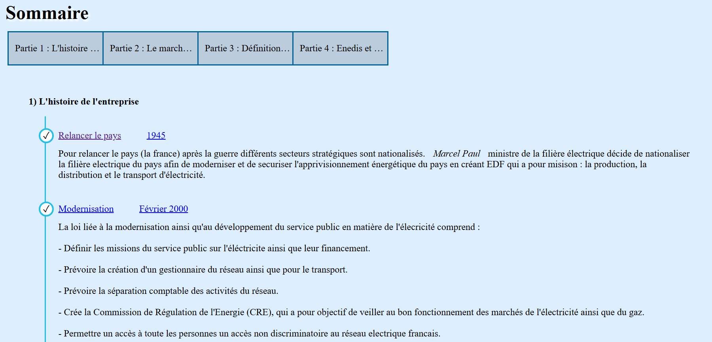
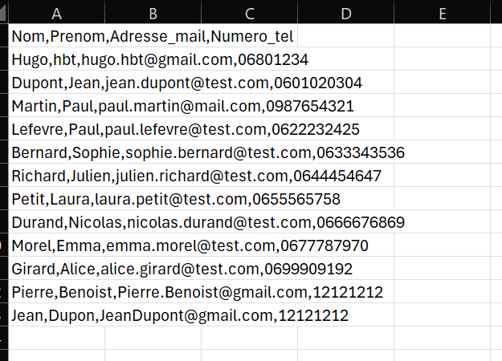
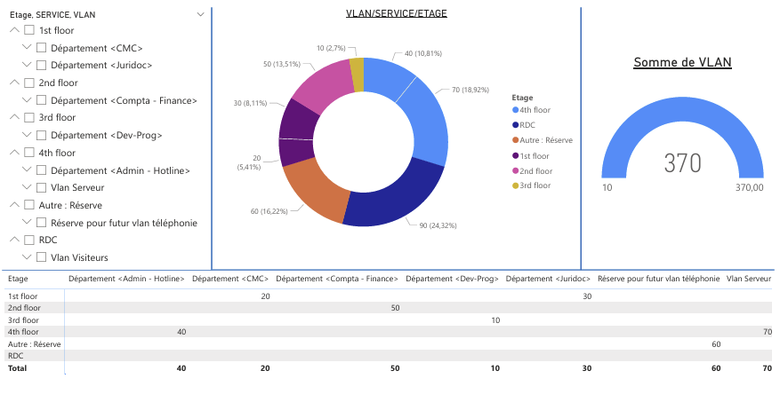
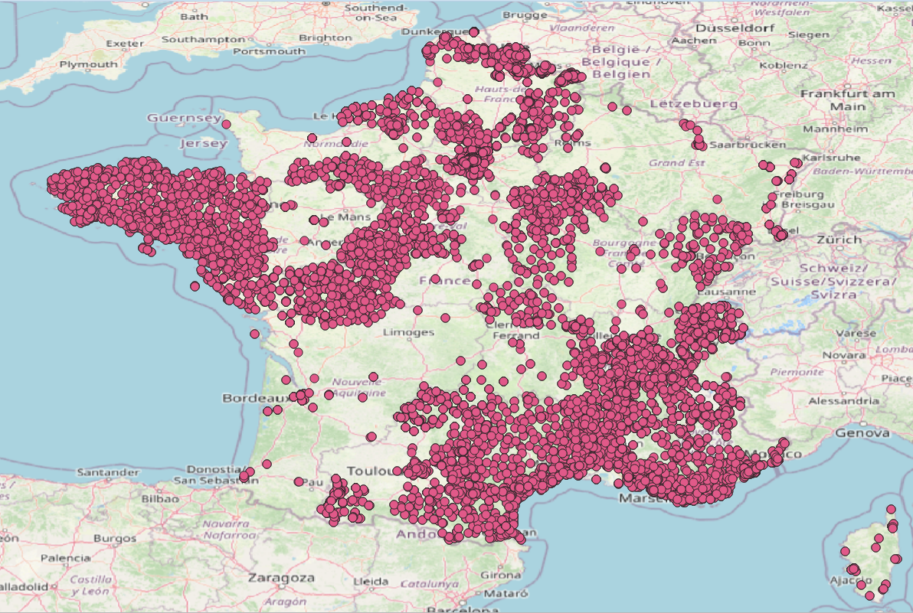
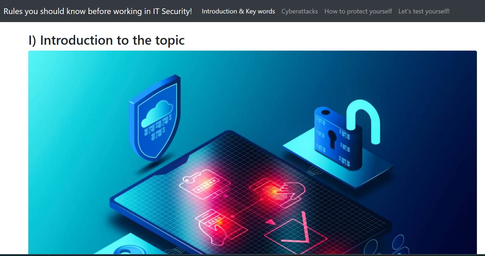
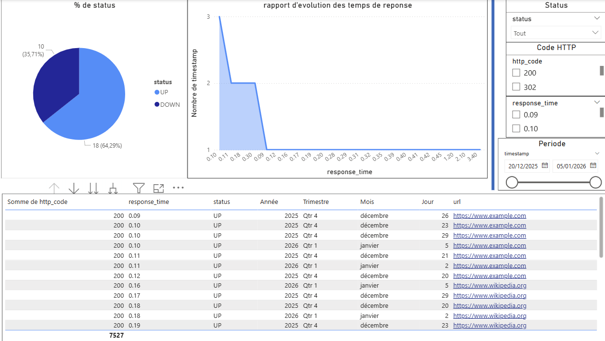
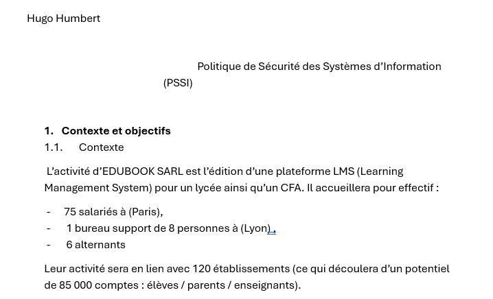
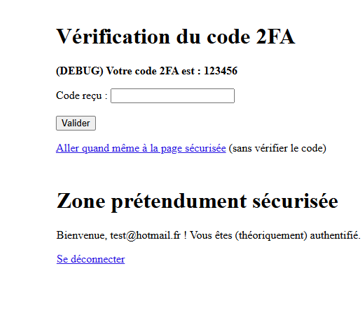

Création de notre premier site web présentant notre entreprise.
Création d’un site statique structuré en HTML avec une mise en forme CSS. Présentation des activités de l’entreprise ainsi que de son domaine d’intervention.
Voir la documentation PDF
Gérer des contacts via un fichier CSV.
Développement d’un script permettant d’ajouter, modifier et lire des contacts.
Voir la documentation PDF
Concevoir et exploiter une base relationnelle.
Conception des tables, relations et requêtes SQL, accompagnée de la réalisation de visuels permettant le suivi et l’analyse de l’inventaire.
Voir la documentation PDF Voir le rendu du projet
Visualiser les bornes électriques en france.
Exploitation de données géographiques pour le suivi des bornes : analyse de leur consommation, de leur état et de leur puissance
Voir la documentation PDF Statistique
Informer / sensibiliser les utilisateurs aux dangers liés à Internet
Sensibiliser les utilisateurs aux dangers liés à Internet, notamment aux attaques de type phishing, aux arnaques en ligne et aux mauvaises pratiques de cybersécurité. L’objectif est d’informer de manière accessible et pédagogique
Voir le site partie 1 Voir le site partie 2 Voir le site partie 3
Système automatisé de surveillance de la disponibilité d’un site internetà l’aide de scripts Bash
Le script vérifie régulièrement l’accessibilité du site, détecte les interruptions de service et génère un rapport CSV en cas d’indisponibilité.
Voir la documentation PDF Sortie CSV
Analyse du périmètre, l’identification du patrimoine informatique et la définition des règles de sécurité associées

Analyse des vulnérabilités d’un site non sécurisé
J’ai testé les différentes vulnérabilités présentes sur le site afin d’évaluer son niveau de sécurité. J’ai ensuite conclu quelles failles pouvaient entraîner les erreurs observées et quelles en étaient les causes probables.
Voir la demande à réalisée Voir la documentation